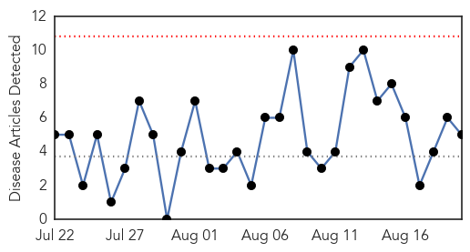
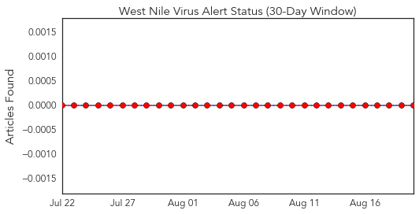
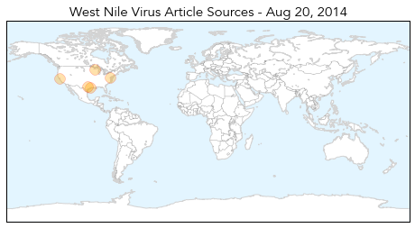
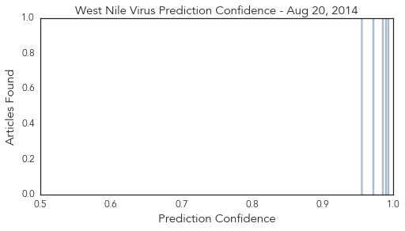

Toggle navigation
Early Warning
Daily Alerts
West Nile Virus
Aug 20, 2014
Compare to:
-
Dengue Fever
Hemmorhagic Fever
Mold/Fungal Infection
Influenza
Meningitis
Pertussis / Whooping Cough
Middle East Respiratory Syndrome
Cholera
Hepatitis
Chikungunya
Yellow Fever
Bubonic Plague
Swine Flu
Ebola
Measles
Unknown
Mumps
30 Day Trends
Web: 0
alerts
, 0
warnings
Twitter: 0
alerts
, 0
warnings
Top Articles:
0.994
West-Nile virus now confirmed in Austria
0.989
First human case of West Nile Virus this year found in Ashland C
0.986
Montgomery County approves $1 million for aerial spraying to fight West Nile Virus
0.971
UC Berkeley student diagnosed with West Nile Virus
0.954
Washington horse diagnosed with West Nile virus
Top Tweets:
No tweets found for Aug 20, 2014
Web/News Articles

Tweets

Article Locations

Article Confidences
